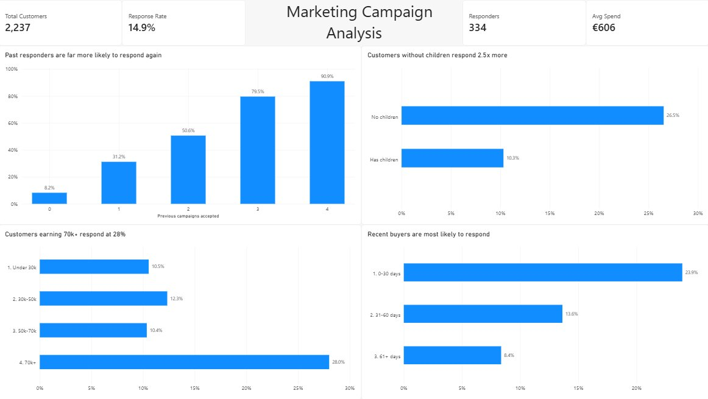

Marketing analytics
Marketing Campaign Performance
Analysed 2,240 customers across six campaigns to find who responds to marketing and where budget should go. Cleaned text-formatted income, impossible birth years and invalid category values.
Key finding: customers who had accepted an earlier campaign and had no children responded at 50%, over 3x the average. They were 10% of customers but produced 34% of all responses.
SQLPower BISegmentation